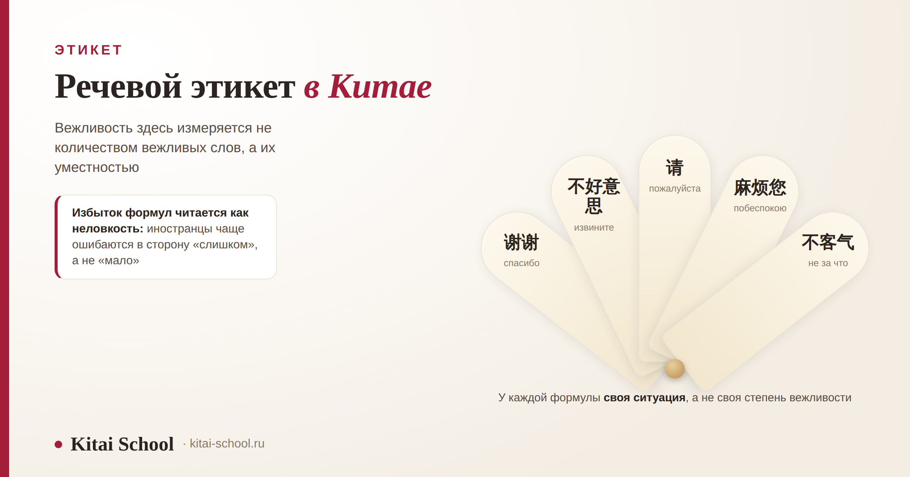
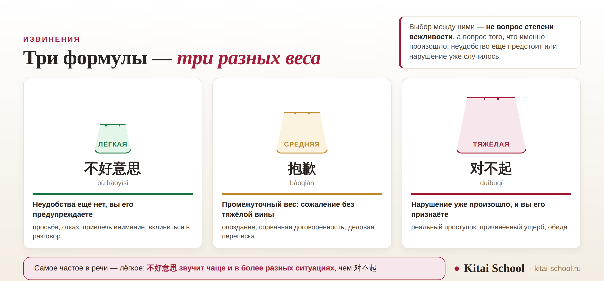

Этикет
Речевой этикет в Китае: формулы вежливости и слова, которыми лучше не злоупотреблять


Вежливые слова учат первыми, и это разумно: без них трудно начать разговор. Беда в том, что вместе с ними переносят и привычку употреблять их по-русски — часто и на всякий случай. В китайском это даёт обратный эффект: формула, сказанная не в той ситуации, обращает на себя внимание, и говорящий выглядит не вежливым, а неловким. Разберём, за что здесь благодарят, чем различаются три формулы извинения и почему иностранцы ошибаются в сторону избытка, а не нехватки.
Вежливость измеряется уместностью, а не количеством формул. У извинений три веса: 不好意思 предупреждает неудобство, 抱歉 выражает сожаление, 对不起 признаёт проступок. Самое частое — лёгкое: 不好意思 звучит в куда большем числе ситуаций. «Спасибо» между близкими — спорная тема, и носители расходятся. Типичная ошибка иностранца — перебор, а не нехватка.
Чем речевой этикет отличается от вежливости вообще
Разведём два разных предмета, потому что их постоянно смешивают.
Этикет поведения — это иерархия, обращение к старшим, сохранение лица, жесты, правила за столом. Про это у нас есть отдельные материалы, и здесь я их не повторяю: как общаются китайцы — про непрямую речь и вежливое «нет», бизнес-этикет в Китае — про деловую часть, деловое письмо китайскому партнёру — про обращение в переписке.
Речевой этикет — это сами слова: чем благодарят, чем извиняются, с чего начинают просьбу, что отвечают на «спасибо». Вот об этом и пойдёт речь дальше.
Благодарность: 谢谢 и его границы
谢谢 (xièxie) знают все, и это действительно основное слово благодарности. Вопрос не в том, как оно переводится, а в том, когда его говорят.
В материалах по культуре речи встречается такое наблюдение: китайцы не держат «спасибо» и «извините» постоянно на языке, как это принято у многих иностранцев, и благодарят чаще не за конкретное действие, а за отношение. Разница тонкая, но заметная: «спасибо» здесь ближе к признанию чужого участия, чем к автоматической реакции на переданную солонку.
Отсюда практический вывод для начинающего. Благодарность уместна в конце эпизода, а не после каждого шага: один раз в конце разговора, покупки, помощи — лучше, чем пять раз по ходу.
«Спасибо» между близкими: почему это спорно
Это самый растиражированный тезис про китайскую вежливость: мол, в семье и между друзьями благодарить не принято, иначе прозвучит отчуждённо. Я проверила, и картина оказалась сложнее.
Одни носители действительно так считают: частые формулы в близком кругу воспринимаются как лишняя церемонность, и 不客气 в ответ родному человеку может прозвучать слишком дежурно.
Другие возражают, и столь же убедительно: благодарить в семье нормально и даже полезно, потому что это напоминает, что чужая помощь не сама собой разумеется. Встречаются и рассказы о том, как привычка благодарить дома сначала казалась странной, а потом прижилась.
Для иностранца вывод скорее успокаивающий: вас не сочтут грубым за «спасибо» и не сочтут невежливым за его отсутствие между своими. Рискует тот, кто произносит формулу автоматически, не глядя на ситуацию.
Извинение: три формулы разного веса
Здесь у изучающих больше всего путаницы, хотя различие довольно чёткое.
| Формула | Вес | Что означает | Где уместна |
|---|---|---|---|
| 不好意思 bù hǎoyìsi | лёгкое | неудобства ещё нет — вы его предупреждаете | просьба, отказ, привлечь внимание, вклиниться в разговор |
| 抱歉 bàoqiàn | среднее | сожаление без тяжёлой вины | опоздание, сорванная договорённость, деловая переписка |
| 对不起 duìbuqǐ | тяжёлое | нарушение уже произошло, и вы его признаёте | реальный проступок, причинённый ущерб, обида |

Главное, что стоит запомнить: 不好意思 относится к тому, что ещё не случилось, — вы предупреждаете возможное неудобство. 对不起 относится к тому, что уже случилось. Учебные разборы формулируют это так: первое используют в просьбах и отказах, то есть для предотвращения потенциального неудобства, второе — там, где нарушение уже произошло.
Отсюда и частотность: ситуаций, где нужно кого-то побеспокоить, в обычной жизни гораздо больше, чем ситуаций, где вы действительно виноваты. Поэтому 不好意思 звучит в речи заметно чаще.
Просьба: как просят по-китайски
Просьба — та ситуация, где иностранцы ошибаются чаще всего, и обычно в одну сторону.
Рабочий порядок простой: смягчающее начало, затем сама просьба, затем благодарность в конце. В роли начала выступает 不好意思, а 请 (qǐng) ставится перед глаголом внутри самой просьбы. Ещё одна частая формула — 麻烦 (máfan), буквально «затруднять, беспокоить»: ею отмечают, что человеку придётся потратить усилия.
Ученик собирался в командировку и честно выучил все формулы из учебника. Применял он их подряд: благодарил за каждое действие, извинялся перед каждой второй фразой.
Принимающая сторона сначала вежливо отвечала, потом стала просто коротко кивать. Он решил, что его не уважают, и начал добавлять формул ещё больше.
На разборе выяснилось, в чём дело: он воспринимал вежливость как громкость — чем больше вежливых слов, тем, казалось, лучше. Для собеседников это выглядело иначе: человек всё время извиняется, значит, ему неловко, значит, что-то не так.
Переделали просто: одно 不好意思 в начале просьбы, благодарность в конце разговора, а не после каждой реплики. На следующей встрече общение пошло заметно легче. Вежливость здесь измеряется уместностью, а не количеством.
Стоит отдельно сказать про 请, потому что его часто принимают за прямой эквивалент русского «пожалуйста». На самом деле это глагол со значением «просить, приглашать», и ставится он перед другим глаголом: 请坐 — «садитесь», 请进 — «входите». В ответ на благодарность 请 не употребляется: там работает другая формула, о ней ниже.
А 麻烦 (máfan) буквально означает «затруднять, беспокоить». Когда человек говорит 麻烦您, он прямо называет вещи своими именами: признаёт, что его просьба создаёт собеседнику хлопоты. Этим она и отличается от нейтрального 请 — в ней есть признание чужого усилия, и потому она звучит теплее в ситуациях, где вы действительно кого-то нагружаете.
Из этого следует правило, которое я советую держать в голове всем начинающим: одно смягчение в начале работает лучше, чем три подряд. Формулы вежливости не складываются и не усиливают друг друга — они размывают просьбу, и собеседнику становится труднее понять, чего от него, собственно, хотят.
Ответ на благодарность
Базовый ответ — 不客气 (bù kèqi), буквально «не церемоньтесь». Он подходит в магазине, в гостинице, на работе и в переписке; для иностранца это безопасный выбор в любой ситуации.
Тонкость касается близкого круга. Часть носителей считает 不客气 в разговоре с родными слишком дежурным и предпочитает что-то более живое или просто короткую реплику. Но это предпочтение, а не норма: ошибкой 不客气 не будет нигде.
Отдельно про сферу обслуживания, где у приезжих чаще всего возникает неловкость. В магазине, кафе или такси развёрнутые благодарности не ожидаются: короткое 谢谢 на выходе покрывает ситуацию целиком. Попытка поблагодарить за каждое действие — за принесённое меню, за сдачу, за открытую дверь — воспринимается как странность, а не как учтивость.
В переписке логика похожая, но формулы длиннее: там вежливость держится на обращении и на структуре письма, а не на количестве «спасибо» внутри текста. Как устроено обращение к адресату и почему порядок частей письма важнее отдельных слов, разобрано отдельно: деловое письмо китайскому партнёру.
Здесь работает то же правило, что и с благодарностью: важнее не выбор формулы, а соответствие тону разговора. В дружеской беседе уместна короткая и лёгкая реплика, в деловой — нейтральная и полная.
Чего иностранцу лучше не делать
Четыре ошибки, которые я вижу чаще прочих.
- Переносить русские формулы дословно. «Извините, что беспокою» в начале каждой фразы звучит навязчиво, а не учтиво.
- Извиняться вместо благодарности. Там, где по-русски говорят «простите за хлопоты», по-китайски чаще уместно поблагодарить, а не извиниться.
- Повторять формулу в каждой реплике. Постоянные извинения читаются как неуверенность, и собеседник начинает чувствовать неловкость за вас.
- Думать, что вежливости много не бывает. Бывает: избыток формул создаёт дистанцию ровно так же, как их нехватка.
Первую ошибку стоит развернуть, потому что она самая устойчивая. В русском «извините» работает как универсальный смягчитель: им открывают обращение к незнакомому, им предваряют вопрос, им заполняют паузу. Перенесённая в китайский, эта привычка даёт поток извинений там, где достаточно одного 不好意思 — и собеседник начинает искать, за что же вы так настойчиво извиняетесь.
Вторая ошибка тоньше и видна в ситуациях, где вам помогли. По-русски естественно сказать «простите, что доставил хлопоты», и это звучит воспитанно. По-китайски в той же ситуации уместнее поблагодарить: извинение переводит помощь в разряд причинённого неудобства, а благодарность — в разряд оказанной услуги. Вторая рамка и приятнее собеседнику, и точнее описывает происходящее.
Есть и пятая ошибка, о которой редко предупреждают: вежливость не заменяет ясности. Просьба, обложенная формулами со всех сторон, перестаёт быть понятной — собеседник слышит учтивость, но не слышит, что именно от него требуется. В китайском это особенно заметно, потому что сама просьба обычно формулируется коротко и прямо, а смягчение выносится в начало фразы.
Исправляется это не заучиванием новых формул, а сокращением количества старых. Выберите одну на эпизод и посмотрите, как изменится реакция собеседника, — обычно разница заметна сразу.
И последнее наблюдение, уже не про формулы. Люди, которые перестают следить за количеством вежливых слов и начинают следить за ситуацией, обычно проходят один и тот же путь: сначала им кажется, что они стали говорить грубее, потом выясняется, что собеседники отвечают охотнее. Дело не в том, что вежливости стало меньше, — она просто перестала перекрывать содержание разговора.
Отдельная тема — прощание: там набор формул свой и зависит от того, увидитесь ли вы снова. Про это у нас есть разбор: как попрощаться на китайском. А рабочие фразы для встреч и переписки собраны здесь: китайский для делового общения.
Формулы вежливости легко выучить и трудно применять: на занятиях мы разбираем не список фраз, а ситуации, в которых каждая уместна. Онлайн-курсы китайского: оставить заявку или написать в Telegram.
Частые вопросы (FAQ)
В чём особенности речевого этикета в Китае?
Главная особенность в том, что вежливость определяется уместностью формулы, а не её наличием. Русский и английский этикет поощряют частое употребление вежливых слов: лишнее «спасибо» никому не мешает. В китайском формула, сказанная не в той ситуации или не тому человеку, обращает на себя внимание и может прозвучать как отстранённость. Поэтому выбор здесь идёт не по шкале «вежливее — менее вежливо», а по ситуации.
Чем 不好意思 отличается от 对不起?
Весом и моментом. 不好意思 предупреждает возможное неудобство: с него начинают просьбу, им смягчают отказ, им привлекают внимание — примерно как английским excuse me. 对不起 — это извинение за то, что уже произошло, за реальный проступок. Между ними есть промежуточное 抱歉. По описаниям, которые дают учебные источники, 不好意思 встречается чаще и в более разнообразных ситуациях.
Правда ли, что китайцы не говорят «спасибо» близким?
Это распространённое наблюдение, но не правило, и носители тут расходятся. Одни считают, что частые формулы между родными создают дистанцию, другие — что благодарить в семье нормально и даже нужно, чтобы помощь не воспринималась как должное. Сходятся обычно на том, что дело не в самом факте, а в тоне, частоте и ситуации. Так что «не говорят» — упрощение.
Как вежливо о чём-то попросить по-китайски?
Порядок примерно такой: смягчающее начало, затем сама просьба, затем благодарность в конце разговора, а не после каждого шага. В роли смягчающего начала чаще всего выступает 不好意思, а 请 ставится перед глаголом в самой просьбе. Главное правило для иностранца — не перегружать фразу формулами: одна в начале работает лучше, чем три подряд.
Что отвечать, когда вас благодарят?
Нейтральный ответ — 不客气. В близком кругу часть носителей считает его слишком дежурным и предпочитает что-то более тёплое или просто короткую реплику, но это предпочтение, а не норма, и ошибкой 不客气 не будет. Для иностранца это безопасный выбор в любой ситуации, от магазина до рабочей переписки.
Какие ошибки чаще всего делают иностранцы?
Две, и обе в сторону избытка. Первая — переносить русские формулы дословно: «извините, что беспокою» в каждой фразе звучит навязчиво. Вторая — считать, что вежливости много не бывает: постоянные извинения читаются как неуверенность, а не как хорошие манеры. Исправляется это не заучиванием новых формул, а сокращением количества старых.
Меньше формул — больше смысла! 恰到好处！
Источники
- Различие формул извинения приведено по учебным разборам: 不好意思 используется для предотвращения потенциального неудобства — в просьбах, отказах, при привлечении внимания; 对不起 — там, где нарушение уже произошло; 抱歉 занимает промежуточное положение. Градация по весу, которую дают источники: 对不起 больше 抱歉 больше 不好意思. Там же отмечено, что 不好意思 встречается чаще и в более разнообразных ситуациях.
- Отдельно отмечена двусторонняя этикетная функция 对不起: формула не ограничена случаями собственной вины.
- Оговорка к предыдущим пунктам: источники по этой теме — учебные материалы и площадки вопросов и ответов, часть из них тайваньские; описания не вполне совпадают, и единой нормы они не задают.
- Наблюдение о том, что китайцы не держат «спасибо» и «извините» постоянно на языке и благодарят чаще не за конкретное действие, а за отношение, приведено по материалу о культуре речи.
- Тезис «между близкими частое 谢谢 звучит отчуждённо» подан как наблюдение, а не как правило, намеренно. Проверка показала, что носители расходятся: одни считают частые формулы в близком кругу излишней церемонностью, другие — нормальной и полезной практикой. Сходятся на том, что решают тон, частота и ситуация.
- Статистики употребления формул в статье нет: корпусных данных я не нашла, а слово «чаще» в источниках дано без цифр, и здесь оно используется так же.
- Чего в статье нет намеренно: иерархии, обращения на 您, титулов, 面子 как понятия, жестов и застольных правил — это отдельные материалы блога; вежливого отказа — это «Как общаются китайцы»; делового контура — это бизнес-этикет. Формул приёма похвалы тоже нет: проверить их современную употребительность мне не удалось.
- Практика Kitai School: типичные ошибки учеников при переносе русских формул вежливости в китайскую речь.